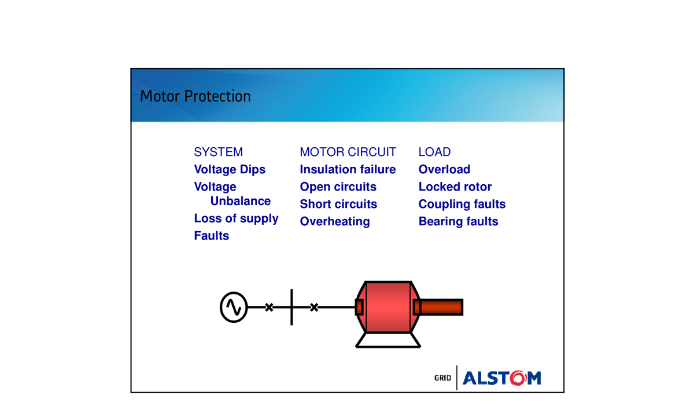
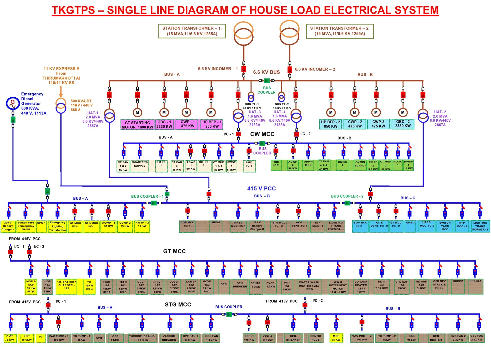

B.E. In-Plant Training · VGTPS Phase I · Mentor-Guided Fieldwork
Motor Energy Audit Fieldwork at VGTPS Phase I
Hands-on energy-audit fieldwork at TANGEDCO's Valuthur Gas Turbine Power Station Phase I during my B.E. in-plant training (February 2025). Under a plant mentor's guidance, walked through the full auxiliary-motor population — cooling water pumps, fans, compressors, lube and feed pumps — and personally took load measurements with clamp meter and power analyser. Documented the load-factor pattern that drives the VFD-retrofit case in any GTPS aux-power optimisation.
B.E. EEE · In-Plant TrainingVGTPS Phase I · TANGEDCOMentor-Guided AuditClamp Meter + Power AnalyserVFD Retrofit CaseAffinity Laws
8 motors
Representative aux-motor sample measured
3 under
Below 40% load (efficiency sweet-spot is 75–100%)
2 over
Above rated load — thermal/insulation risk
5.55–6.60%
Phase I aux consumption range (plant 5-yr data)
Context
The training, the mentor, the audit
The Setting
VGTPS Phase I — TANGEDCO's 95 MW combined-cycle plant (GE Frame 6FA gas turbine + BHEL steam turbine). Like any combined-cycle plant, it has a large auxiliary-motor population: cooling water pumps, ID fans, FD fans, lube oil pumps, instrument air compressors, fuel-handling drives. Phase I auxiliary consumption ran 5.55–6.60% of total generation across FY2016-17 to FY2020-21 (plant documentation) — that's the pool VFD retrofits target.
My Role
I walked through Phase I with a plant mentor who showed me each major motor system, explained its role in the plant, and let me personally take readings with clamp meter and power analyser. Same trip as my P01 documentation study and the data collection for my P08 protection-coordination project — this is the EEE hands-on portion of that broader visit.
Why the EEE Background Matters
Reading a clamp meter is easy; interpreting the measurements is the EEE part. A 40%-loaded induction motor doesn't just consume 40% of rated power — its power factor collapses, magnetising current dominates, and effective efficiency drops well below nameplate. Knowing the motor equivalent circuit lets you turn a single load-factor measurement into a real efficiency assessment.
What I Took Away
Auxiliary motors in utility plants are systematically oversized for plant-design worst cases that rarely happen in steady operation. The opportunity is consistent across the fleet — VGTPS isn't unusual. The harder problem isn't finding the savings, it's justifying capex when O&M budgets are constrained — which is where the MBA layer comes in.
Methodology
How the readings were taken

An industrial motor sits between the supply, the motor circuit and the driven load — the three domains an energy audit measures across. Under- and over-loading (the load-factor pattern found here) show up as current drawn versus rated. Source: ALSTOM / TANGEDCO auxiliary-plant training slides.

The plant's auxiliary motors on a real GTPS single-line — GT starting motor (1500 kW), HP/MP boiler-feed pumps, cooling-water pumps and gas-booster compressors hang off the 6.6 kV bus and the 415 V GT/STG MCCs. These are exactly the kind of drives an energy audit samples for load factor. From a sister TANGEDCO station (TKGTPS), same design as VGTPS. Source: TANGEDCO GTS training pack.
01
Sample selection. With the mentor, identified a representative sample of 8 auxiliary motors spanning the major drive categories in Phase I — pumps (cooling water, lube oil, feed water), fans (cooling, exhaust), compressors, and a handling drive. Mix of motor ratings from ~11 kW up to ~45 kW.
02
Measurement protocol. During normal operating hours, clamped on each motor's supply cable. Measured line current (A), voltage (V), power factor (cos φ), and computed input kW. Compared against nameplate rated kW to derive load factor. Recorded measurements in a notebook, photographed nameplates where permitted.
03
Interpretation. Applied the standard induction-motor performance curve — efficiency stays high (typically >90%) between 75% and 100% load, degrades sharply below 50% load due to fixed magnetising losses, and recovery occurs only by reducing the motor size, not by accepting the inefficiency.
04
What was beyond my scope. The full energy-savings projection and VFD-investment ROI were calculated by the plant's own energy-audit work — I was not present for that calculation. I contributed the measurements; the plant team converted them into financial figures using their own electricity tariff and capex assumptions.
Findings
The load-factor pattern across the motor sample
Across the 8-motor sample, three distinct patterns emerged. The exact motor identifiers and per-machine values are in my training notebook — what's defensible to share publicly is the pattern.
Pattern A — Severely under-loaded (3 motors)
Three motors ran at 33–42% load factor. Power factor dropped to 0.55–0.61 — well below acceptable. The motors are doing the work asked of them, but at substantial wasted reactive current and poor real-power efficiency. Right-sizing + VFD candidates.
Pattern B — Overloaded (2 motors)
Two motors measured at 110–112% of rated kW. Power factor was reasonable (~0.82–0.83) because the motor is in its design region, but continuous over-rating risks insulation life and triggers thermal protection trips. Either replace with higher-rated motors or reduce process demand.
Pattern C — Well-matched (3 motors)
Three motors operated at 76–86% load factor with power factor 0.85–0.88. These are correctly sized for the duty — no intervention needed beyond normal preventive maintenance. The lesson: most VFD-retrofit candidates are not "any motor" — they're the ones you identify by measurement.
Engineering Background
Why VFDs work — the Affinity Laws
The cube law that makes VFDs powerful
For centrifugal machines (pumps, fans) — which is most of a power-plant aux fleet — the Affinity Laws give: Flow ∝ Speed · Pressure ∝ Speed² · Power ∝ Speed³. A 20% reduction in speed = a 49% reduction in power consumed. This is why VFDs return such large savings — even modest speed reductions yield outsized power savings.
01
Throttling vs VFD. Many plants control flow by partially closing valves — the motor still runs at full speed, consuming full power, and the valve dissipates excess energy as heat. A VFD slows the motor instead, drawing only the power actually needed. The savings come from avoiding the wasted work, not from improving the motor itself.
02
Soft-start benefit. Direct-on-line starts pull 6–8× rated current as inrush. A VFD ramps voltage gradually, eliminating the spike. This protects motor windings, cables and switchgear, and reduces utility demand-charge exposure.
03
Power factor. Active front-end VFDs can maintain near-unity power factor at the supply point — reducing reactive power demand and the chance of triggering tariff PF penalties.
Recommendations
What the plant team did with the findings
Priority 1
Address the overloaded motors first. The two motors at >110% rated load are the immediate-risk items — winding insulation degradation, unplanned trips. A planned replacement is much cheaper than a forced outage.
Priority 2
Right-size + VFD on the under-loaded motors. The three motors at <42% load are candidates for replacement with smaller motors plus VFDs. The combination addresses both the over-sizing and the throttle losses.
Priority 3
Build it into the wider aux-consumption programme. Phase I aux consumption is 5.55–6.60% of total generation. Even a modest reduction across the full motor population — through this kind of systematic audit-then-retrofit work — recovers direct net plant output. The methodology is repeatable.
Plant economics
The plant's own analysis of these measurements projected approximately 20% reduction in aux electricity consumption on the audited motors with a ~14-month VFD investment payback at then-current tariff. These financial figures came from the plant team's analysis using my measurements — I was not present for the ROI calculation itself.
Connection
How this fits with the rest of the portfolio
→ Project 01
P01 documents what the plant is — the thermodynamic cycle and electrical layout. The motor audit here is the hands-on, measurement-side of the same in-plant training trip.
→ Project 02
P02 (operations study) recommends VFD retrofits as a recovery lever against the 5.55–6.60% aux consumption. The audit here is the concrete evidence that the lever exists at VGTPS specifically.
→ Project 08
Same in-plant training trip. P08 picked up the protection-coordination thread; this project picked up the energy-audit thread. Both grounded in real plant data from the same visit.
A note on this study's scope
This is hands-on energy-audit fieldwork conducted during B.E. in-plant training, under direct guidance of a VGTPS plant mentor. I personally took the clamp-meter and power-analyser readings on each sampled motor. The load-factor pattern (3 under, 3 well-matched, 2 over) reflects real measurements. The VFD energy-savings projection and 14-month ROI figures are from the plant's own subsequent analysis of those measurements using their own electricity tariff and capex assumptions — I was not present for that calculation. Specific motor identifiers and per-machine kW values are in my training notebook; the patterns shared here are what's defensible to publish without risking plant-data confidentiality.